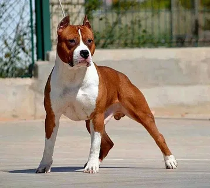
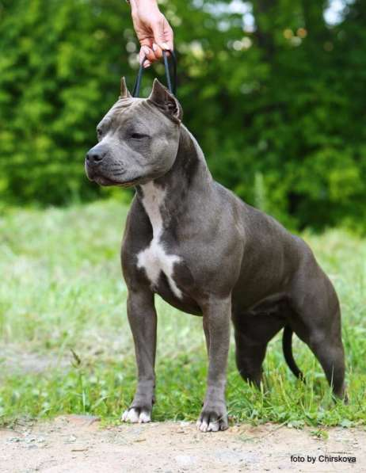
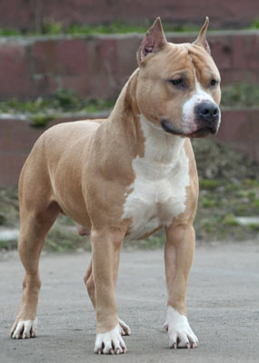

Разновидности американского стаффордширского терьера
Хотя порода признана единым стандартом, амстафы могут отличаться окрасом, телосложением и характером. Здесь мы расскажем о самых интересных вариациях.
Узнать больше

Стандартный тип
Классический амстаф по стандарту AKC: мощное телосложение, короткая шерсть, выраженная мускулатура. Рост 43-48 см, вес 25-30 кг. Идеальный баланс силы и грации.

Голубой окрас
Редкий серо-голубой оттенок шерсти, обусловленный рецессивным геном. Требует особого ухода за кожей. Очень ценится среди заводчиков за уникальный внешний вид.

Палевый и соболиный
Теплые оттенки от светло-кремового до насыщенного соболиного. Часто с темной маской на морде. Такие собаки выглядят особенно благородно и элегантно.